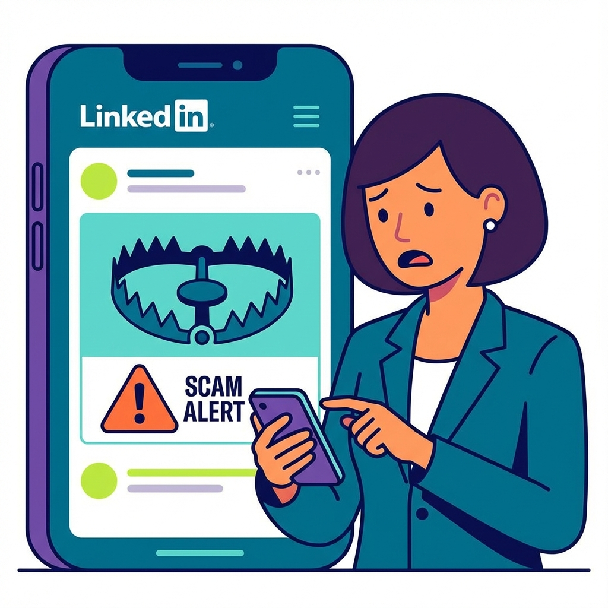
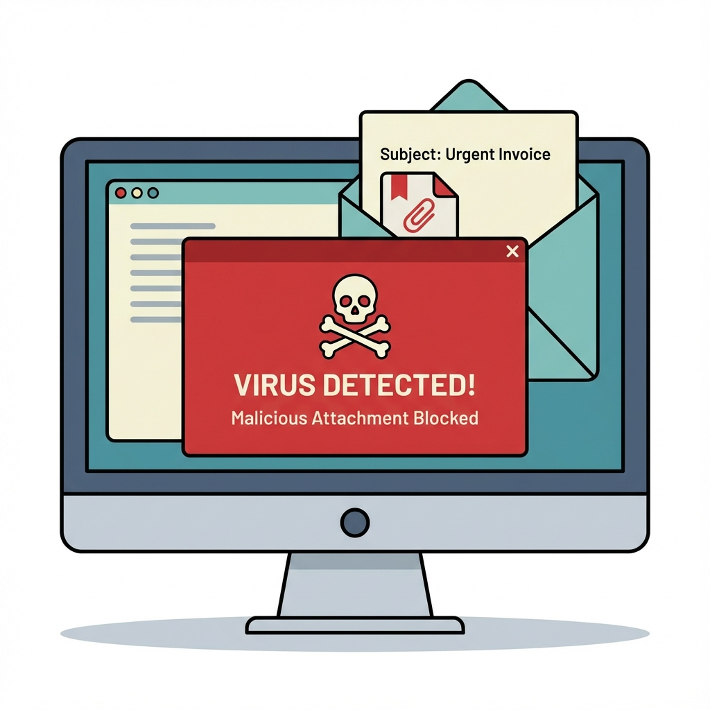

Posting your Gmail address publicly on LinkedIn while complaining about spam or fake job alerts is a contradiction many professionals overlook. We often unintentionally encourage the very problem we despise. In an era where data is the new gold, protecting your contact information is critical.

Be wary of "easy apply" comments traps.
The "Interested" Trap
You’ve seen them: job posts that ask you to comment “Interested” to apply. Often, these roles aren't even genuine. They are engagement farming tactics designed to boost the poster's visibility. Regardless of authenticity, participating in these threads signals to algorithms—and scrapers—that you are an active target.
Even worse are posts requesting you to "drop your email address in the comments." While some may be well-intentioned, this practice exposes you to significant cybersecurity risks. Scrapers harvest these emails to build lists for spammers and scammers.
Actionable Tip: Instead of commenting, always look for a direct application link. If none exists, visit the company's official career page or send a professional Direct Message (DM) to the recruiter asking for the correct application channel.
The Hidden Dangers: Malware & Phishing
Once your email is out in the wild, the risks escalate beyond just annoying spam. Malicious actors use these public emails to send sophisticated phishing attacks.

Malicious documents (like fake job descriptions or offer letters) can be sent to your email. Opening these attachments can expose your device to viruses, trojans, or ransomware. These attacks are often tailored to look legitimate because they know you are currently job hunting.
How to Stay Safe
- Scrutinize Every Sender: Check the email address carefully. Does it match the company’s official domain?
- Avoid Unnecessary Exposure: Never post your email in public comments.
- Verify Links: Hover over links before clicking to see the actual destination.
- Use Dedicated Emails: Consider using a separate email address specifically for job applications to isolate potential spam.
Stay alert and protect your digital footprint. Your safety is worth more than a comment.